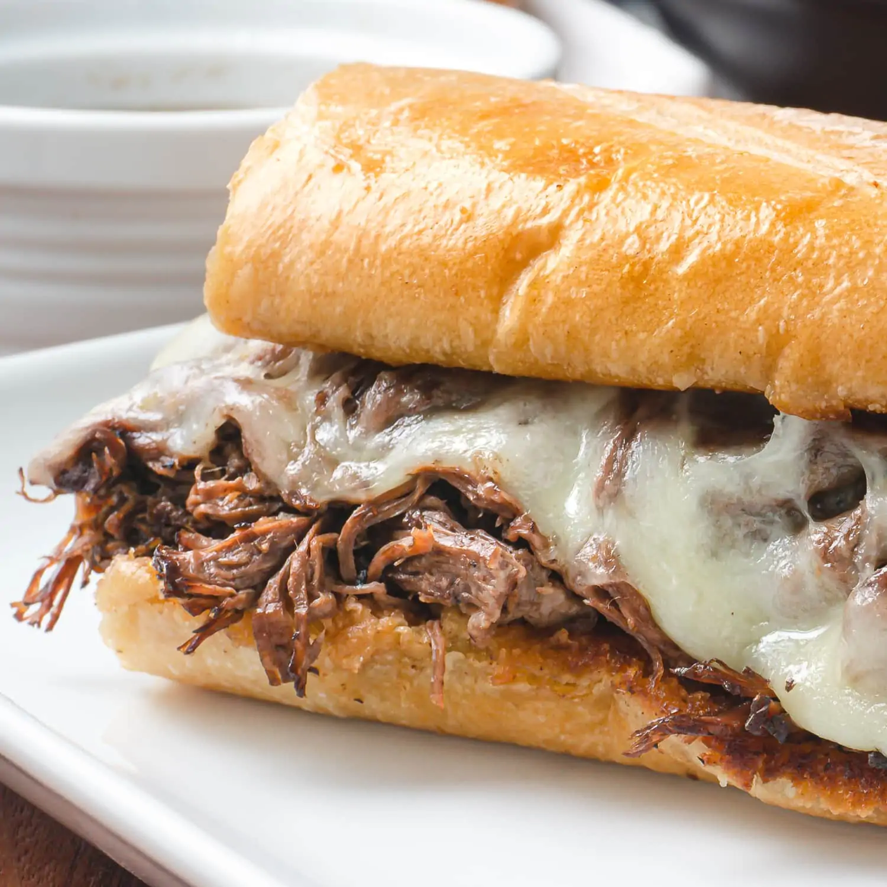

French Dip

Description
Instant Pot French Dip Sandwiches are a sweet and savory, delicious gift from heaven. I can't describe them any other way. Biting into the toasted, crispy, buttered bread, and getting a taste of the unbelievably juicy meat, covered in melted cheese, is a food experience like no other!
- 1 tablespoon vegetable oil
- 3 pounds chuck roast
- garlic powder
- 1 large yellow onion thinly sliced
- ½ cup sweet red table wine I prefer Llano Sweet Red
- ½ cup soy sauce
- 4 cups unsalted beef stock
- 1 bay leaf
- 2 loaves french bread
- 1 stick butter (salted)
- 16 slices provolone cheese
Instructions
- Start by seasoning the chuck roast with the salt, pepper and garlic powder.
- Add the vegetable oil and allow it to heat up. Next, place the chuck roast in the pot and sear undisturbed on one side for at least 5 minutes or until it's nicely browned. Then, turn the roast over and brown on the other side. Once the roast has browned nicely on all sides, remove it from the Instant Pot and set aside. Leave the browned bits in the bottom of the pot.
- Add the sliced onion to the Instant Pot and sauté, deglazing the bottom of the pot and tossing the onion in the browned bits as they cook. Continue to sauté the onions until they are a golden brown and starting to caramelize. About 10 to 12 minutes.
- Add the red wine to the onions and cook, continuing to deglaze the bottom of the pot, until the wine is reduced by half. About 2 to 3 minutes.
- Add the soy sauce and beef stock to the pot, place the chuck roast back into the pot and then add the bay leaf. Turn off the Sauté function.
- Close the Instant Pot, set the pressure release valve to 'Sealing' and set the pot to cook on 'Manual' or 'Pressure Cook', 'High Pressure' for 100 minutes.
- Once the 100-minute cook time has completed, allow for a 25-minute Natural Pressure Release. When the 25-minute NPR has finished, release the remaining pressure and then open the pot.
Home